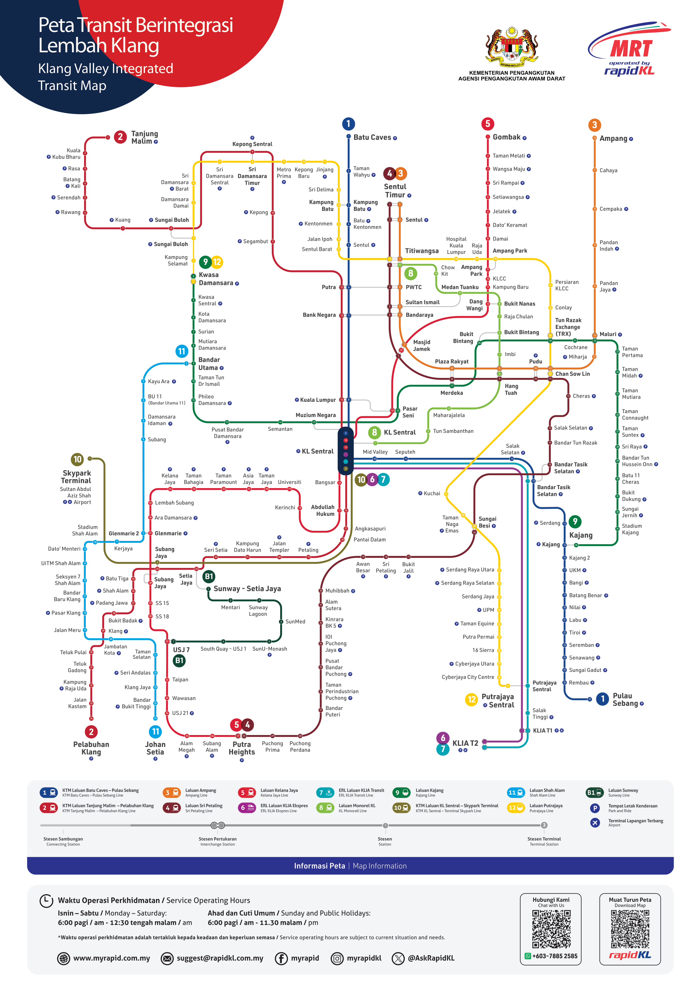

Klang Valley rail journey planner — sample disruptions, cut-short services, distances and times.
Choose a starting line and station, then an ending line and station. Then press Check to see the shortest available route — it may combine lines through interchanges (◎). Press Map to view the full network map.
Sample network alignment map — not to scale, fictional sample data only.

Solid coloured stations are running. Faded grey stations are cut short or suspended. ◎ marks an interchange.